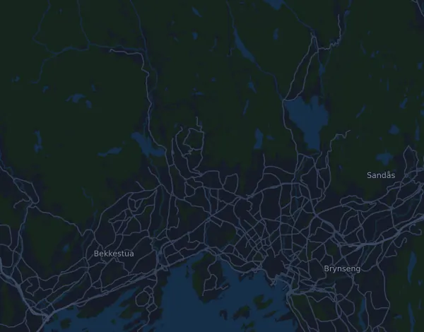

EcoTrail Oslo – Trail 80 km
- Distans
- 80,5 km
- Höjdmeter
- ↑ 1 959 m
- Högsta punkt
- 500 m ö.h.
- Underlag
- Terräng och stig
- Karaktär
- Kuperad
- Start
- kl. 07:00
- Vätskekontroller
- 5
Höjdprofil
Förbered dig med Mila
Mila är en löpcoach i appen. Lägger du till ett lopp i din plan planerar coachen veckorna fram till start efter din form, och ger dig en tidsprognos och en plan för tempo, vätska och energi på banan.

Rätt pass. Rätt dag.
Banan

Om banan
Banan startar nära havsnivå i Nedre Foss park och stiger långsamt de första nio kilometrarna, knappt 200 höjdmeter. Vid km 13 kommer den brantaste klättringen: 283 meter på drygt 3 km, i snitt runt 9 procent, upp mot banans högsta partier kring 400–500 m ö.h. Därefter följer 228 meter på knappt 5 km från km 24, en kortare och brantare backe på 177 meter vid km 34 och den sista stora klättringen på 191 meter vid km 49. Efter ungefär 56 km går banan mest utför, och de sista knappt tio kilometrarna ligger nästan vid havsnivå, troligen ganska flackt.
Banan kräver uthållighet över många timmar, en effektiv gång i de branta backarna och lår som tål långa nedförslöpor när benen redan är trötta. Den kräver också att du orkar springa på plan mark i slutet. Bygg långpassen stegvis i kuperad terräng och träna rask backgång. Vänj benen gradvis vid utförslöpning och komplettera med styrka för lår och vader. Öva på energi och dryck under långpassen, och håll igen i början så att det finns kraft kvar till de sista milen.
Beskrivningen är skriven av Milas coach utifrån banans data.
Klättringar
| Börjar vid | Längd | Höjdmeter | Lutning | Topp (m ö.h.) |
|---|---|---|---|---|
| km 0,0 | 9,2 km | 197 m | 2,2 % | 206 |
| km 13,1 | 3,1 km | 283 m | 9,1 % | 444 |
| km 19,8 | 1,6 km | 36 m | 2,3 % | 306 |
| km 24,1 | 4,7 km | 228 m | 4,9 % | 418 |
| km 30,6 | 1,3 km | 38 m | 2,9 % | 424 |
| km 34,0 | 2,4 km | 177 m | 7,5 % | 500 |
| km 37,2 | 540 m | 25 m | 4,7 % | 473 |
| km 41,2 | 1,1 km | 41 m | 3,7 % | 398 |
| km 43,0 | 890 m | 58 m | 6,5 % | 413 |
| km 49,1 | 3,2 km | 191 m | 6,0 % | 358 |
| km 57,4 | 650 m | 26 m | 3,9 % | 247 |
| km 76,1 | 3,1 km | 52 m | 1,7 % | 66 |
Inför start
Vätskekontroller
| Vid | Här finns |
|---|---|
| km 13,4 | vatten, sportdryck |
| km 32,0 | vatten, sportdryck, mat |
| km 51,0 | vatten, sportdryck, mat, salt |
| km 61,0 | vatten, sportdryck, mat, salt |
| km 71,7 | vatten, sportdryck |
Starttider
- kl. 07:00
Källa: en.ecotrailoslo.com, hämtat 15 oktober 2026
Vanliga frågor
När går EcoTrail Oslo – Trail 80 km?
EcoTrail Oslo – Trail 80 km går lördag 29 maj 2027. Kontrollera datum och starttid hos arrangören.
Vilken tid startar EcoTrail Oslo – Trail 80 km?
Enligt arrangören: kl. 07:00.
Hur lång är EcoTrail Oslo – Trail 80 km och hur många höjdmeter är det?
Loppet är 80,5 km långt med 1 959 höjdmeter uppför och 1 959 nedför. Högsta punkten ligger 500 m ö.h.
Hur ser banan på EcoTrail Oslo – Trail 80 km ut?
Banan räknas som kuperad, med 24 höjdmeter per km i snitt. Den har 12 klättringar på minst 25 höjdmeter; den största börjar vid km 13,1: 283 höjdmeter på 3,1 km. Banan går från start till ett mål på en annan plats. Underlaget är terräng och stig.
Finns det vätskekontroller på EcoTrail Oslo – Trail 80 km?
Ja. Arrangören har 5 vätskekontroller: km 13,4 (vatten, sportdryck); km 32,0 (vatten, sportdryck, mat); km 51,0 (vatten, sportdryck, mat, salt); km 61,0 (vatten, sportdryck, mat, salt); km 71,7 (vatten, sportdryck).
Hur lägger jag upp farten på EcoTrail Oslo – Trail 80 km?
Sikta på en jämn ansträngning snarare än ett jämnt tempo: låt farten gå ner i uppförsbackarna, hämta tillbaka den när det planar ut, och håll igen de första kilometrarna. De största klättringarna börjar vid km 0,0, km 13,1, km 24,1 och km 49,1. I Mila får du en tempoplan för just den här banan efter din egen form.
Fler lopp som det här
Fler lopp i närheten
- Det Norske Fjellmaraton – Maraton (42,2 km)5 juni 2027 · Heimsand (Sjodalen), Beitostølen, Norge
- Lofoten Ultra-Trail® // 50 miles 87,3 km5 juni 2027 · Leknes, Norge
- Birkebeinerløpet 21 km12 juni 2027 · Lillehammer (Birkebeineren skistadion), Norge
- Midnight Sun Marathon 42,2 km19 juni 2027 · Tromsø, Norge
- Sentrumsløpet 10 km24 april 2027 · Oslo, Norge
- Fjordkraft Bergen City Marathon – Maraton 42,2 km24 april 2027 · Bergen, Norge
Förbered dig med Mila
Rätt pass. Rätt dag.
Uppgifterna kommer ur banfilen och arrangörens information. Kontrollera datum, starttider och regler hos arrangören.
Mila är inte kopplad till, sponsrad av eller godkänd av arrangören eller loppets sponsorer. Namn och varumärken tillhör sina ägare. Arrangör eller rättighetsinnehavare? Begär ändring eller borttagning